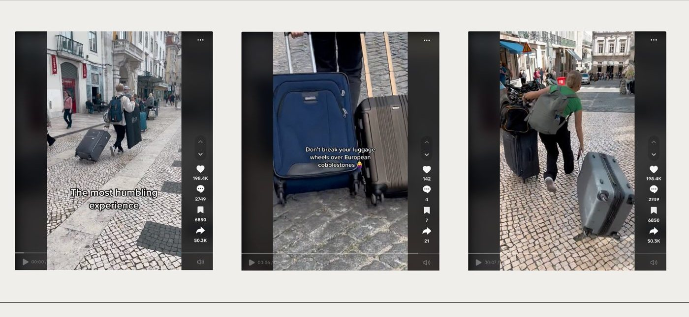
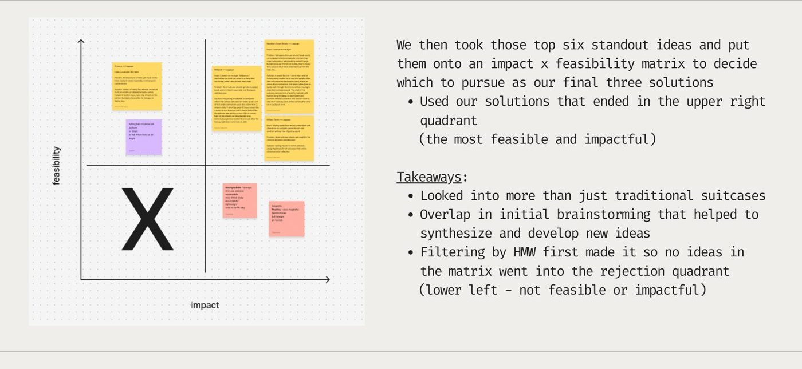
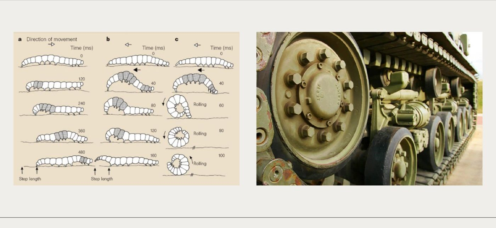
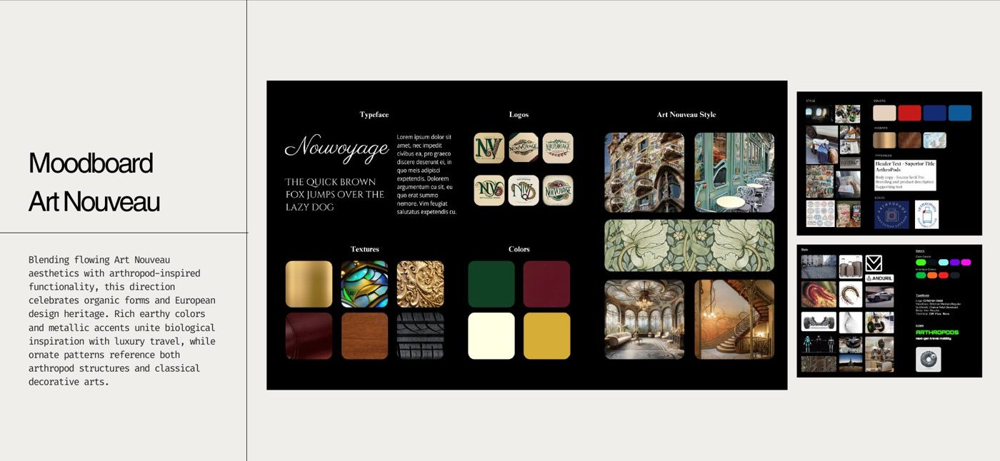
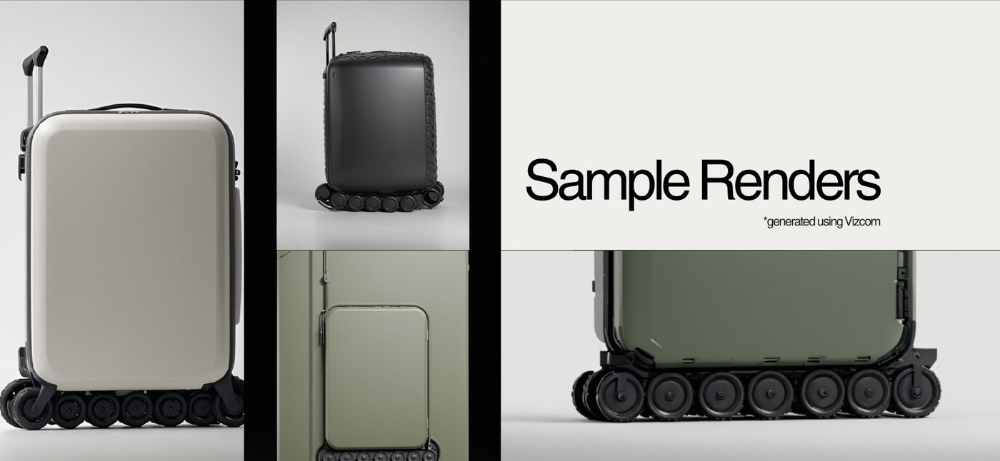
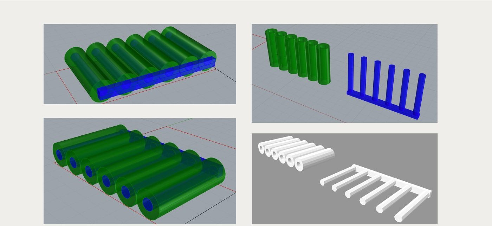
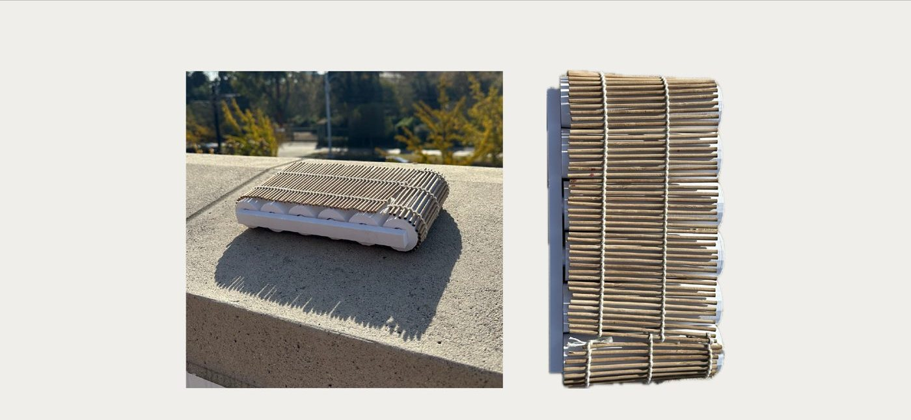
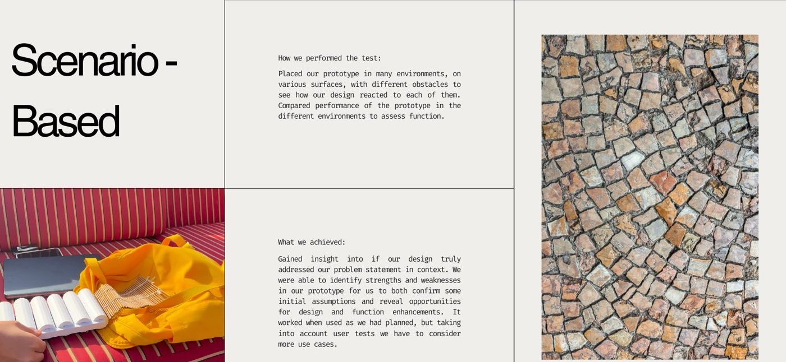
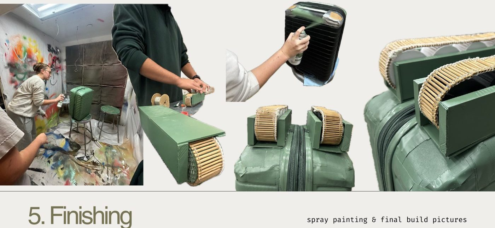
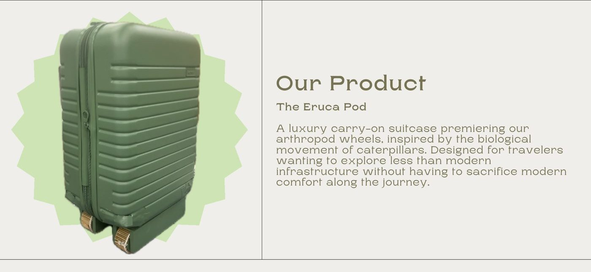

Fall 2024 · ACAD-324, Practice of Design
Eruca
Problem statement
A young traveler who feels frustrated about dragging a suitcase through European cities needs to roll over cobblestones and stairs easily, but standard suitcase wheels get stuck and break.
How It Went
-
AnalysisResearch
Built for Airports
The brief was biomimicry x luggage. Suitcases work fine in an airport. Then you hit cobblestone streets, public transit and stairs in historic buildings, and the wheels give out.
How might we redesign luggage for travelers 18 to 35 so it actually works in European cities, beyond the airport?

-
DefinitionResearch
Rachel
We surveyed and interviewed travelers, then built a persona: Rachel Chen, a 28-year-old UI/UX designer and digital nomad. Carry-on only, hard-shell, efficiency-obsessed, and loyal to her suitcase brand even though it lets her down on the road.
-
IdeationDesign
Wheels, Carrying, Structure
We grouped our brainstorm into wheels, carrying and structure, pinned two standouts from each, and put all six on an impact and feasibility matrix. Filtering by our How Might We first meant nothing landed in the reject corner.

-
SelectionDesign
Move Like a Caterpillar
Millipedes, centipedes and caterpillars move in a wave, with each leg handling its own bump. So instead of 2 wheels per side, we designed a train of 6 to 8 small wheels, each with its own suspension. Tank treads were the other reference.

-
BrandingBusiness
Eruca
Eruca is Latin for caterpillar. The brand pairs Art Nouveau curves with earthy colors and metal accents, so it reads European and a little luxury.

-
ImplementationTech
Renders and CAD
Sketches became renders, then CAD models of the wheel and rail system.

Renders, made with Vizcom 
CAD -
EvaluationResearch
Testing It on Real Ground
We ran usability tests with people in our target age range and scenario tests on different surfaces. Rolling it felt natural. But people wanted 360-degree spin like the suitcases they already own, and to roll it tilted.

Lo-fi prototype 
Scenario testing -
ImplementationProduct
Rebuild
Testing left us with three problems: the mechanism, direction and feasibility. So we ripped the wheels out of a real suitcase, 3D printed new wheels and rails, assembled, cut the rails shorter, reprinted, and spray painted it.

-
FinalProduct
The Eruca Pod
A luxury carry-on with arthropod wheels. If it went to production: a polycarbonate shell, sealed cork wheels for shock absorption, and a polyurethane coating.

Looking Back
- What worked
- Borrowing from nature. Every final project had to use something from the natural world, and moving like a caterpillar was a cool way to do it.
- What I'd do differently
- Look for more use cases earlier, from different perspectives around the globe. A product that works doesn't cover every case (ours didn't plan for wobbly stones), and finding the ones you missed is one way to innovate.
- What's next
- Keep bringing nature into future products. It's right there, and it works beautifully.